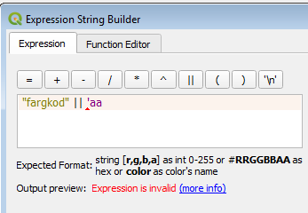
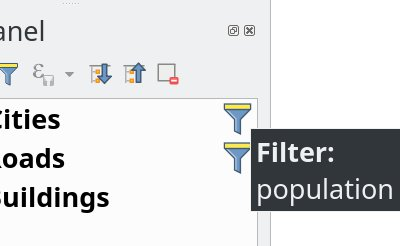
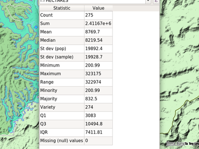
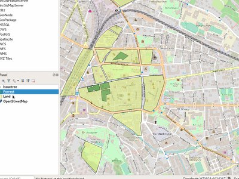
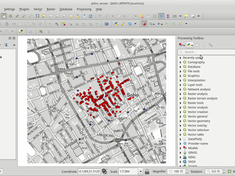
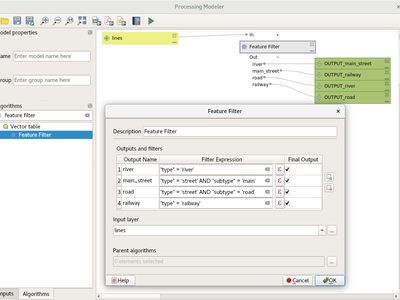
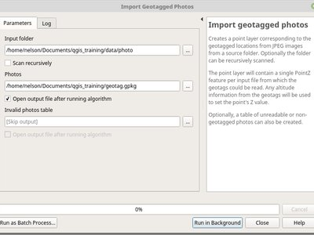

QGIS 3.2の変更履歴¶

The greatest QGIS release ever! QGIS 3.2 brings a massive list of new changes - the highlights of which we will try to cover here. As always can we remind you that QGIS is an open source project and if you are able to, consider supporting our work through donations, sustaining memberships or contributions to the code documentation, web site and so on.
謝辞
We would like to thank the developers, documenters, testers and all the many folks out there who volunteer their time and effort (or fund people to do so). From the QGIS community we hope you enjoy this release! If you wish to donate time, money or otherwise get involved in making QGIS more awesome, please wander along to qgis.org and lend a hand!
QGIS is supported by donors and sustaining members. A current list of donors who have made financial contributions large and small to the project can be seen on our donors list. If you would like to become an official sustaining member, please visit our sustaining membership page for details. Supporting QGIS helps us to fund our six monthly developer meetings, maintain project infrastructure and fund bug fixing efforts. A complete list of current sustaining members is provided below - our very great thank you to all of our supporters!
QGISはフリーソフトウェアであり、使用するために何かを支払う義務はありません。実際、財務的または社会的地位にかかわらず、遠くから広く人々にそれを使用するよう奨励したいと考えています。空間意思決定ツールで人々に力を与えることは、人類全体にとってより良い社会をもたらすと私たちは信じます。
- QGISバージョン3.2のスポンサー
- 一般機能
- 地図ツール
- 式
- ユーザーインターフェース
- 機能：レイヤーパネル：フィルターされた地図レイヤーのインジケーター
- 機能：ロケータフィルタのプリフィックスをカスタマイズできるようにする
- 機能：HTTP（S）、FTP、またはクラウドサービスに格納されたベクターとラスターのオープン
- 機能：ロケータ検索バーの高速計算機
- 機能：パネルを切り替えるためのショートカット
- 機能：ロケータでのブックマーク検索
- 機能：プロジェクトのアクションを閉じるおよび元に戻す
- 機能：タイトルバーの未保存の変更インジケータ
- 機能：設定可能な地図のヒントの遅延
- 機能：レイヤーまたはグループをレイヤーパネルの最上部に移動する
- 機能：統計情報パネルのコンテンツをクリップボードにコピーボタン
- 機能：ロケータからの検索設定、オプション、およびプロジェクトのプロパティページ
- 機能：埋め込みレイヤーとグループのインジケーター
- シンボロジ
- レンダリング
- データ管理
- フォームとウィジェット
- レイヤーの凡例
- 地図コンポーザ
- プロセッシング
- 機能：「属性テーブルによる結合」アルゴリズムの改善
- 機能：テンプレートからスクリプトを読み込む
- 機能：モデルを処理するための地物フィルタアルゴリズム
- 機能：ゾーンヒストグラム
- 機能：結び、差分および交わりのアルゴリズムをC ++へと移植
- 機能：「ポイント投影（デカルト）」アルゴリズム
- 機能：より多くのアルゴリズムに対する動的パラメータ値
- 機能：マルチリングバッファ（一定距離）アルゴリズム
- 機能：新しい「セグメント化」アルゴリズム
- 機能：すべてのポリゴンパーツにポイントを作成するオプション
- 機能：地物回転アルゴリズム
- 機能：「ジオメトリ属性の追加」の線の連続性
- 機能：ジオタグ付きの写真をインポートする
- 機能：x / y座標値入れ替えアルゴリズム
- 機能：「増加フィールドを追加」のソート順オプション
- 機能：距離パラメータユニットのインジケータ
- 機能：アルゴリズムのログを保存/クリア/コピーすることができます
- 機能：ウェッジバッファアルゴリズム
- 機能：可変幅バッファ
- 機能：ラスターアルゴリズムを再分類する
- 機能：単一レイヤーのユニオンアルゴリズム
- アプリケーションとプロジェクトのオプション
- ブラウザ
- データプロバイダ
- プラグイン
- 3D地物
QGISバージョン3.2のスポンサー¶
A special thanks to all our sustaining members, sponsors and donors for helping us to make this release possible!
一般機能¶
機能：新しいzip形式のプロジェクトファイル形式.qgzがデフォルトの形式になりました¶
QGZは3.0でオプションのフォーマットとして追加されました。このフォーマットをデフォルトのフォーマットとすることで、SVG、GPKG内のオフラインデータ、カラーランプ、プラグイン、スクリプトなどのリソースを埋め込むことができるコンテナにたどり着くことができます。

この機能は OSLANDIA-Paul Blottiere によって開発されました
機能：クエリビルダのフィールド値のフィルタリング¶
クエリビルダで新しい式フィルタを作成するときに、フィールド値のプレビューパネルをフィルタ処理できるようになりました。
この機能は Salvatore Larosa によって開発されました
機能：Ctrl-Shift-Tabによるフルスクリーンマップ¶
Ctrl-Tabの他に、Ctrl-Shift-Tabを使用して、マップを表示し、マップのみを表示するようになりました。ツールバーやボタンは表示されません（ウィンドウタイトルがなくても、F11と組み合わせて）。 Beamerまたは大画面でのフルスクリーンマップ投影に最適です。ズームとパンもまだできます！ （Mathieu Pellerinの作品に基づく）

この機能はRichard Duivenvoordeによって開発されました
地図ツール¶
機能：地図ツールを簡素化して地物をスムーズにできるようになりました¶
「地物を簡単に」地図ツールの名前が「地物を簡単に/なめらかに 」に変更され、地物の対話式平滑化がサポートされるようになりました。

この機能は North Road によって資金提供されました
この機能は、 Nyall Dawson (North Road) によって開発されました
機能：追加オプション付き識別ツール¶
新しい改善で、ユーザーは、複数の地物を確認するために、[選択]に類似したツールを使用できるようになりました。
この機能は、レスターシャー州評議会とイーストハンプシャー地区協議会によって資金提供されました
この機能は Martin Dobias と Viktor Sklencar によって開発されました
機能：地図のノードの展開/折りたたみ状態も保存¶
各地図テーマは、どのレイヤー、グループ、凡例項目が展開されているかを記録します。地図テーマを選択すると、展開/折りたたみ状態がレイヤーツリーに適用されます。

この機能は、 ERIKUSプロジェクト内のArpa Piemonte (Dipartimento Tematico Geologia e Dissesto) によって資金提供されました
この機能は Martin Dobias (Lutra Consulting) と Faunalia によって開発されました
機能：新しい地図ビューのための自動の「選択へズーム」モード¶
新しい地図ビューを設定すると、現在の選択範囲に自動的にズームできます。この例のように異なる地図主題と組み合わせできます。

この機能は Technology One によって資金提供されました
この機能は Nathan Woodrow によって開発されました
機能：地図作成ツールの簡略化のための簡略化方法の選択¶
これにより、より地図作成的に楽しい「Visvalingam」の簡略化アルゴリズムなど、インタラクティブな地図簡略化ツールでの簡略化にさまざまな手法を使用できます。

この機能は North Road によって資金提供されました
この機能は、 Nyall Dawson (North Road) によって開発されました
機能：フォーム内の関連する地物へのズームを追加¶
関連するテーブルで1つ以上のレコードが選択されると、新しいボタンが地物属性のサブフォームに表示されます。ジオメトリがある場合、ボタンは地図をこれらの地物にズームします。

この機能はJürgenFischerによって開発されました
機能：識別結果のデカルト座標での面積/長さ/周長¶
QGIS 3.2では、楕円体およびデカルトの両方で面積、長さ、および周長を、識別結果パネル内に別々に表示します。2つの異なる測定値を見ることで、不正確な射影または楕円体の選択に起因する領域または距離計算における潜在的な問題をよりよく理解できます。

この機能は North Road によって資金提供されました
この機能は、 Nyall Dawson (North Road) によって開発されました
式¶
機能：新しい式の関数¶
- color_grayscale_average()
- color_mix_rgb()
- flip_coordinates()
- wedge_buffer()
- tapered_buffer()
- buffer_by_m()
新規変数：
- @project_home
- @project_author
- @project_abstract
- @project_creation_date
- @project_identifier
- @project_keywords
この機能はMathieu Pellerin, Nyall Dawsonによって開発されました
機能：より有用な式ビルダ¶
式ビルダーは、QGIS内で式を簡単に作成できるようになりました。
- ビルダーでは、式からの期待値の範囲を含むデータ定義値の説明が表示されるようになりました
- 現在の式でCtrl +クリックすると、その関数のヘルプが自動的に開きます
- 式のエラーのある部分に印が表示されるようになりました
- これは、式の解析から得られたエラーメッセージの完全なリストを示します

この機能は Technology One によって資金提供されました
この機能は Nathan Woodrow によって開発されました
ユーザーインターフェース¶
機能：レイヤーパネル：フィルターされた地図レイヤーのインジケーター¶
メインウィンドウのレイヤーツリービュー（ToC）は、ベクターレイヤーにフィルターが適用されているときに表示されるインジケーターをサポートします。これにより、ユーザーはすべてのデータのサブセットを参照していることを理解しやすくなります。インジケータのアイコンをクリックすると、クエリビルダが表示されます。
これはレイヤーとグループ名の隣のレイヤーツリービューに余分なアイコンを表示するためのミニフレームワークを追加します。ツールチップのテキストをインジケータに関連付けると、インジケータの追加のコンテキストを提供できます。さらに、ユーザーがインジケーターをクリックしてカスタムアクションを定義できるときに信号が発信されます。アイデアは、情報のさまざまなビットを微妙に報告するために、将来インジケータを使用できることです。たとえば、次のようになります。
- 無効なジオメトリを持つ地図レイヤー
- その場で再投影の例外を使用した地図レイヤー
- 地図レイヤーにデータソースがありません
- 無効なCRSを持つ地図レイヤー

この機能は、 ERIKUSプロジェクト内のArpa Piemonte (Dipartimento Tematico Geologia e Dissesto) によって資金提供されました
この機能は Martin Dobias (Lutra Consulting) と Faunalia によって開発されました
機能：ロケータフィルタのプリフィックスをカスタマイズできるようにする¶
ロケータフィルタのプレフィックスは、「ロケータ」タブのアプリケーション設定でカスタマイズできるようになりました

この機能は QGISユーザーグループスイス によって資金提供されました
この機能は Denis Rouzaud, OPENGIS.ch によって開発されました
機能：HTTP（S）、FTP、またはクラウドサービスに格納されたベクターとラスターのオープン¶
3.2では、HTTP（S）、FTP、またはクラウドサービスに格納されているベクターおよびラスターデータセットを簡単に開くために、データソースマネージャのベクターおよびラスターパネルが更新されました。基本的なHTTP（S）認証サポートが含まれています。

この機能は Mathieu Pellerin によって開発されました
機能：ロケータ検索バーの高速計算機¶
QGIS 3.2では、単純な式の評価が可能です（実際にはQGISの任意の式…したがって本当にしたい集計あるいは同様のものを使用できるでしょう）。「=」と続けてロケータバーに式を入力します。有効な式が入力された場合、ユーザーに結果をクリップボードにコピーするオプションが与えられます。
例えば「= 10/3」と入力すると、ロケータ項目「クリップボードへのコピー 『3.3333333」が表示されます。

この機能は North Road によって資金提供されました
この機能は、 Nyall Dawson (North Road) によって開発されました
機能：パネルを切り替えるためのショートカット¶
Ctrl + {いいえ}ショートカット
この機能は Technology One によって資金提供されました
この機能は Nathan Woodrow によって開発されました
機能：ロケータでのブックマーク検索¶
空間的なブックマークを検索できます。検索結果をダブルクリックすると、ブックマークが拡大表示されます。
短い動画： https://www.youtube.com/watch?v=ymW4TU8QWy4
新しいフィルタでは、これ自体をプレフィックス 「b」 および tr(「Spatial bookmarks」) をdisplaynameとして表示します。
この機能はKlavsPihlkjærによって開発されました
機能：プロジェクトのアクションを閉じるおよび元に戻す¶
2つの新しいアクションが「プロジェクト」メニューに追加されました
- 「閉じる」：アクティブプロジェクトを閉じ、QGISウィンドウを「最近のプロジェクト」リストに戻します。
- 「Revert」：アクティブなプロジェクトを最後に保存した状態に復元し、保存されていないすべての変更を破棄します

この機能はNathan Woodrow, Nyall Dawsonによって開発されました
機能：タイトルバーの未保存の変更インジケータ¶
QGIS 3.2は、アプリケーションタイトルバーのプロジェクト名に 「*」接頭辞を追加することで、現在のプロジェクトに変更が保存されていないことを示す標準的なUIアプローチを採用しました。これにより、保存していない変更が一目でわかるようになります。
この機能は North Road によって資金提供されました
この機能は、 Nyall Dawson (North Road) によって開発されました
機能：設定可能な地図のヒントの遅延¶
この機能はjduggeによって開発されました
機能：統計情報パネルのコンテンツをクリップボードにコピーボタン¶
統計パネルの出力テーブルをクリップボードにコピーすることが可能になりました。

この機能は Mathieu Pellerin によって開発されました
機能：ロケータからの検索設定、オプション、およびプロジェクトのプロパティページ¶
短い動画： https://www.youtube.com/watch?v=duB2YekUmV0
新しいフィルタは、プレフィックス 「s」とtr（ 「Settings」）をdisplaynameとして表示します。
この機能はKlavsPihlkjærによって開発されました
機能：埋め込みレイヤーとグループのインジケーター¶
埋め込まれたプロジェクトのレイヤーとグループには、便利な埋め込みインジケータが表示され、プロジェクト内に埋め込まれているレイヤーやグループがすぐにわかります。
この機能は North Road によって資金提供されました
この機能は、 Nyall Dawson (North Road) によって開発されました
シンボロジ¶
機能：新しいレイヤーのためのより良い色¶
新しい地図レイヤーに割り当てられた「ランダム」カラーはもはや「ランダム」ではなく、「視覚的に気に入った」色のプリセットパレットからランダムに選択されています。醜い赤ちゃんのおしゃぶりの緑のレイヤーに別れを言いなさい！
この機能は North Road によって資金提供されました
この機能は、 Nyall Dawson (North Road) によって開発されました
レンダリング¶
機能：メインウィンドウのスケールバーのフォントサイズとファミリをカスタマイズできます¶
この機能は Mathieu Pellerin によって開発されました
機能：北矢印の装飾のカスタムSVGパスとサイズ¶
この機能は Mathieu Pellerin によって開発されました
データ管理¶
機能：マテリアライズド・ビューを更新する¶
ブラウザから、マテリアライズド・ビューを右クリックすると、それを更新できるようになりました。

この機能は Etienne Trimaille によって開発されました
機能：オフライン編集のZおよびMサポート¶
オフライン編集では、Z座標とM座標のレイヤーもサポートされるようになりました。
この機能は Oester Messtechnik によって資金提供されました
この機能は Matthias Kuhn、OPENGIS.ch によって開発されました
機能：QGISプロジェクトのメタデータ¶
QGIS 3.0で開始されたメタデータの作業を続けると、3.2ではQGISプロジェクトのメタデータがサポートされるようになりました。これにより、抄録、キーワード、連絡先の詳細、リンクなど、プロジェクトのプロパティに詳細なメタデータを設定できます。

この機能は、ERIKUSプロジェクト内のArpa Piemonte（地質災害学科）によって資金提供されました
この機能は Nyall Dawson (North Road) と Faunalia によって開発されました
フォームとウィジェット¶
機能：複数選択値関係ウィジェットの複数列レイアウト¶
複数選択が可能な値関係ウィジェットは、複数の列をサポートするようになりました。これにより、水平方向の画面スペースをより有効に使用できます。

この機能は Grundbuch- und Vermessungsamt des Kanton Zug によって資金提供されました
この機能は David Signer、OPENGIS.ch によって開発されました
機能：カスタム属性フォーム（UIファイル）にURLを使用できるようにする¶
UIファイルは、最初の使用時にすべてのセッションでダウンロードされます。これにより、更新されたUIファイルをクライアントに容易に配布することが可能になる。
この機能は SIRS によって資金提供されました
この機能は Denis Rouzaud, OPENGIS.ch によって開発されました
機能：ドリルダウン（カスケード）フォーム¶
QGIS 3.2ではドリルダウン（カスケード）フォームのサポートが導入されています。ここでは、1つのフィールドで使用可能な値は他のフィールドの値に依存します。この機能を使用すると、ユーザーは同じフォームの別のフィールドの現在の値に基づいて「値関係」式を作成できます。ユーザーがフィールドの値を変更すると、関連するすべてのフィールドで使用可能な選択肢が新しい値と一致するようにフィルタリングされ、フォーム内で階層フィルタリング戦略（ドリルダウンまたはカスケード）が可能になります。

この機能は、Grant Boxer、NaturalGIS、TudorBărăscu、NotioGIS、Républiqueet Canton deNeuchâtel、Arpa Piemonte、Nelson Silva、QGISデンマークユーザーグループ、Bo Victor ThomsenとLene Fischer、North River Geographicによって資金提供されました
この機能は、 Alessandro Pasotti（North Road） によって開発されました。
レイヤーの凡例¶
機能：ベクターレイヤーのシンボルの上にオプションのテキスト¶
この機能により、ユーザーは凡例のシンボルに余分な情報を追加できます。

この機能は、 ERIKUSプロジェクト内のArpa Piemonte (Dipartimento Tematico Geologia e Dissesto) によって資金提供されました
この機能は Martin Dobias (Lutra Consulting) と Faunalia によって開発されました
機能：QGISプロジェクトから別のグループ/レイヤーにコピー＆ペーストします。¶
プロジェクトやプロファイル間でグループやレイヤーをコピー＆ペーストできます。
この機能は Salvatore Larosa によって開発されました
地図コンポーザ¶
機能：属性テーブル項目のデータ定義テーブルソース¶
属性テーブルが「レイヤー地物」ソースに設定されている場合、この新しい地物は、地物を元にする基になるベクターレイヤーをデータ定義することを可能にします。
既存のテーブル属性（列設定）はすべてそのまま残されているため、データ定義テーブルを異なるフィールドを持つレイヤーに設定すると、テーブルに空の列が作成されます。
この機能は Kartoza / InaSAFE によって資金提供されました
この機能は、 Nyall Dawson (North Road) によって開発されました
機能：レイアウトエクスポートに埋め込まれたプロジェクトメタデータ¶
SVG、PDF、または画像に印刷レイアウトを保存すると、作成されたファイルにプロジェクトメタデータが埋め込まれます。異なるメタデータ要素のサポートは、個々のエクスポート形式によって異なります。
この機能は、ERIKUSプロジェクト内のArpa Piemonte（地質災害学科）によって資金提供されました
この機能は、 Nyall Dawson (North Road) によって開発されました
機能：スケールバーテキストの書式の改善¶
QGIS 3.2では、バッファ、シャドウ、背景のようなスケールバーのテキスト内で、あらゆる種類のテキスト書式設定オプションを使用できます。
読めないスケールバーのテキストは過去のものです！
この機能は North Road によって資金提供されました
この機能は、 Nyall Dawson (North Road) によって開発されました
プロセッシング¶
機能：「属性テーブルによる結合」アルゴリズムの改善¶
結合できなかったレコードを破棄するためのオプションと同様に、「属性テーブルによる結合」アルゴリズムでは1対多の結合をサポートする（つまり、一致する各地物に対して別々の地物を作成する）ようにアップグレードされました。さらに、結合されたフィールドのオプションのプレフィックスを指定できるようになりました。

この機能は、 Mathieu Pellerin、Nyall Dawson によって開発されました
機能：テンプレートからスクリプトを読み込む¶
カスタムテンプレートから処理スクリプトを読み込むための新しいオプション

この機能は、 Matteo Ghetta (Faunalia) によって開発されました
機能：モデルを処理するための地物フィルタアルゴリズム¶
処理モデラー用の新しい地物フィルタアルゴリズムを追加します。式に基づいてソースの地物をフィルタリングし、一致する地物を最終出力として別の出力に送信したり、後で処理するために異なるアルゴリズムパイプラインを送信したりできます。
詳細は、この ブログ記事 をお読みください。

この機能は QGISユーザーグループスイス によって資金提供されました
この機能は Matthias Kuhn、OPENGIS.ch によって開発されました
機能：ゾーンヒストグラム¶
この新しいアルゴリズムは、ポリゴンとして定義されたゾーン内に含まれるラスターレイヤーからの各固有値のカウントを表すフィールドを追加します。

この機能は Mathieu Pellerin によって開発されました
機能：結び、差分および交わりのアルゴリズムをC ++へと移植¶
QGISネイティブのジオプロセシングアルゴリズムは、PythonからC ++に移植されました。このアップデートで、パフォーマンスの向上に加えて、いくつかのバグが修正されました。
この機能は、 InaSAFE DFAT によって資金提供されました
この機能は、 Martin Dobias（Lutra Consulting） によって開発されました
機能：「ポイント投影（デカルト）」アルゴリズム¶
この新しい処理アルゴリズムは、指定された距離と方位（方位角）だけ入力点レイヤーからのポイントを投影します。フィールド値や式から距離と方位を取ることができるように、距離と方位の動的パラメータをサポートしています。
この機能は、 `Nyall Dawson（North Road）<http://north-road.com>`__ によって資金提供されました
この機能は、 Nyall Dawson (North Road) によって開発されました
機能：より多くのアルゴリズムに対する動的パラメータ値¶
QGIS 3.2では、3.0で始まった作業を拡張して、選択された処理アルゴリズムの「動的」パラメータを可能にしました。動的パラメータを使用すると、式やフィールド値を使用してアルゴリズムが実行されている間にパラメータの値を指定できるため、バッファされる個々の地物ごとに動的にバッファサイズを計算できます。
3.2では、次のアルゴリズムが動的パラメータをサポートするようになりました。
- 穴を削除する
- 重複する頂点を削除する
- 簡略化する
- スムース
- グリッドにスナップ
- 細分化
- トランセクト
- 翻訳
この機能は North Road によって資金提供されました
この機能は、 Nyall Dawson (North Road) によって開発されました
機能：マルチリングバッファ（一定距離）アルゴリズム¶
この新しいアルゴリズムは、固定または動的距離およびリング数を使用して、入力レイヤー内のすべての地物に対してマルチリング（ドーナツ）バッファを計算します。
この機能はAlex Bruyによって開発されました
機能：新しい「セグメント化」アルゴリズム¶
QGIS 3.2では、カーブしたジオメトリをセグメント化するための2つの新しいアルゴリズムがプロセシングに追加されました。
「最大距離によるセグメント化」：セグメント化は、元の曲線とセグメント化された表現との間の最大許容オフセット距離を指定することによって実行される。
「最大角度によるセグメント化」：セグメント化は、直線化されたジオメトリ上の頂点間の最大許容半径角度（例えば、元の円弧中心から線形化されたジオメトリ上のconsective 出力頂点へと作成された円弧の角度）を指定することによって実行されます。
この機能は North Road によって資金提供されました
この機能は、 Nyall Dawson (North Road) によって開発されました
機能：すべてのポリゴンパーツにポイントを作成するオプション¶
「Centroid」と 「Point on surface」アルゴリズムに、入力ジオメトリの個々の部分ごとにポイントを作成する新しいオプションができました。
この機能は Mathieu Pellerin によって開発されました
機能：地物回転アルゴリズム¶
この新しいアルゴリズムは、設定された角度で地物を回転できます。回転は、プリセットポイントまたは個々の地物の重心の周りで行うことができます。
この機能は North Road によって資金提供されました
この機能は、 Nyall Dawson (North Road) によって開発されました
機能：「ジオメトリ属性の追加」の線の連続性¶
「ジオメトリ属性を追加する」アルゴリズムでは、線のレイヤーの連続性と直線距離が計算されるようになりました。
この機能は North Road によって資金提供されました
この機能は、 Nyall Dawson (North Road) によって開発されました
機能：ジオタグ付きの写真をインポートする¶
QGIS 3.2では、新しい「ジオタグ付き写真のインポート」アルゴリズムがプロセッシングに追加されました。これは、ジオタグ付きjpgファイルをスキャンするフォルダの選択を可能にし、結果と共に撮影航路、高度、方向、およびタイムスタンプの属性を持つPointZレイヤーを作成します。
必要に応じてスキャンを再帰的に行うことができ、読み込めなかったジオタグや欠落していた写真のオプションテーブルを作成することもできます。
このアルゴリズムは、外部リソースウィジェットを使用してリンクされた写真を属性フォームに表示するように出力テーブルを自動的に設定します。

この機能は North Road によって資金提供されました
この機能は、 Nyall Dawson (North Road) によって開発されました
機能：x / y座標値入れ替えアルゴリズム¶
このアルゴリズムは、入力ジオメトリのX座標値とY座標値を入れ替えます。誤って緯度と経度の値を逆にしたジオメトリを修復するために使用できます。
この機能は North Road によって資金提供されました
この機能は、 Nyall Dawson (North Road) によって開発されました
機能：「増加フィールドを追加」のソート順オプション¶
この変更により、オプションで、増加フィールドの追加アルゴリズムで値を割り当てるときに使用するソート順を設定できます。以前は、元の地物順序を使用して常に値が追加されていました。この変更により、ユーザーは地物に値が割り当てられる順序を制御できます。
この機能は North Road によって資金提供されました
この機能は、 Nyall Dawson (North Road) によって開発されました
機能：距離パラメータユニットのインジケータ¶
アルゴリズムが「距離」タイプのパラメータを使用する場合、単位はパラメータの隣に表示されます。これにより、単位がレイヤーやCRSパラメーターに依存する距離を使用するアルゴリズムを実行する際の混乱を避けることができます。たとえば、バッファーアルゴリズムの距離パラメーターによってレイヤー単位の距離が与えられます。QGIS 3.2では、ダイアログ。うまくいけば、これはユーザーの混乱や偶発的な 「1000度バッファ」を減らします。
さらに、単位が度の場合、パラメータの隣に小さな警告アイコンが表示されます。このアイコンのヒントは、ユーザーがデータを適切な投影ローカル座標系に再投影するように指示します。
この機能は North Road によって資金提供されました
この機能は、 Nyall Dawson (North Road) によって開発されました
機能：アルゴリズムのログを保存/クリア/コピーすることができます¶
アルゴリズム実行ダイアログでは、現在のログを（テキストまたはHTMLファイルに）保存し、ログの内容をクリップボードにコピーし、ログをクリアするための新しいボタンが追加されました。
この機能は、SMEC / SJによって資金提供されました
この機能は、 Nyall Dawson (North Road) によって開発されました
機能：ウェッジバッファアルゴリズム¶
この新しいアルゴリズムは、入力点からくさび形のバッファを作成します。
方位角パラメータは、ウェッジの中央が指す角度（度）を示します。バッファ幅（度）はwidthパラメータで指定します。ウェッジは、方位角方向のいずれかの角度幅の半分に伸びることに注意してください。バッファの外側半径は外側半径で指定され、オプションで内側半径も指定できます。
このアルゴリズムは、方位角、幅、および半径の動的パラメータをサポートしています。
このアルゴリズムのネイティブ出力はCurvePolygonジオメトリですが、これらは出力フォーマットに応じて自動的にポリゴンにセグメント化できます。
この機能は North Road によって資金提供されました
この機能は、 Nyall Dawson (North Road) によって開発されました
機能：可変幅バッファ¶
新しい処理アルゴリズムが追加され、テーパーバッファ（指定された開始および終了直径を持つ）およびラインストリングm値からの可変幅バッファを含む可変幅バッファが作成されました。
この機能は North Road によって資金提供されました
この機能は、 Nyall Dawson (North Road) によって開発されました
機能：ラスターアルゴリズムを再分類する¶
2つの新しいQGISラスター再分類アルゴリズムがプロセッシングに追加されました。これらは使いやすく、しかも高速かつ安定していて、QGISでサポートされている任意のラスターレイヤータイプに対応しています！
- レイヤーごとに再分類する：ベクターテーブルから最小/最大/値フィールドで指定された範囲を使用してラスターを再分類する
- テーブルによって再分類する：アルゴリズムダイアログでユーザーが入力した固定テーブルを使用してラスターを再分類する
この機能は、SMEC / SJによって資金提供されました
この機能は、 Nyall Dawson (North Road) によって開発されました
機能：単一レイヤーのユニオンアルゴリズム¶
レイヤーの地物間のオーバーラップを解決するために、ユニオンアルゴリズムをただ1つの入力レイヤーで実行できるようになりました。たとえば、領域が3つの地物でカバーされている場合、その地物からその領域が切り取られ、3つの新しい地物が追加され、元の地物の属性がコピーされます。

この機能は、 InaSAFE DFAT によって資金提供されました
この機能は、 Martin Dobias (Lutra Consulting) によって開発されました
アプリケーションとプロジェクトのオプション¶
機能：プロジェクトの必須レイヤー¶
必須レイヤーはプロジェクトから削除することはできません。これにより、不要と考えるレイヤーを削除することからプロジェクトユーザーを保護するための安全性がさらに高まります（たとえば、結合、関係、式で使用されます）。

この機能は、 ERIKUSプロジェクト内のArpa Piemonte (Dipartimento Tematico Geologia e Dissesto) によって資金提供されました
この機能は Martin Dobias (Lutra Consulting) と Faunalia によって開発されました
機能：PostgreSQLデータベースでのプロジェクトの保存と読み込み¶
ユーザーはプロジェクトをPostgreSQLデータベースに保存できるようになりました。プロジェクトは プロジェクト > に保存 > PostgreSQL メニューに保存し、 プロジェクト > から読み込み > PostgreSQL メニューを使用してロードできます。データベースに保存されたプロジェクトは、ブラウザドックからも読み込むことができます（プロジェクトは、保存されたスキーマの下に他のレイヤーとともに表示されます）。
QGISプロジェクトの保存/読み込みは、PostgreSQLの接続設定で明示的に有効にする必要があります。デフォルトでは無効になっている新しいオプション「データベースにQGISプロジェクトの保存/読み込みを許可する」オプションがあります。
新しいAPIが導入されました。これにより、カスタムプロジェクトストレージ実装の作成が可能になります（プラグインで使用可能）。関連するQEP：https://github.com/qgis/QGIS-Enhancement-Proposals/issues/118
この機能は、 ERIKUSプロジェクト内のArpa Piemonte (Dipartimento Tematico Geologia e Dissesto) によって資金提供されました
この機能は Martin Dobias, Peter Petrik (Lutra Consulting) と Faunalia によって開発されました
ブラウザ¶
機能：XYZタイルの接続を保存/読み込みする¶
ブラウザパネルから、XYZタイルのエントリをXMLファイルにエクスポート/インポートすることができます。

この機能は Salvatore Larosa によって開発されました
機能：プロジェクトのホームパスを手動で設定できます¶
QGIS 3.2のこの新機能により、プロジェクトホームパス（ブラウザが 『Project Home’アイテムを作成するために使用する）が、プロジェクトが保存されている場所と常に一致するのではなく、プロジェクトのユーザーによって設定されます。
これにより、ユーザーはプロジェクトのホームをデータやその他のコンテンツを含むフォルダに設定できます。これは、QGISプロジェクトが組織の「プロジェクト」のルートフォルダに格納されていない組織にとって特に便利です。
プロジェクトのホームパスを相対パスに設定することもできます。この場合、プロジェクトの保存場所との相対パスになります。
パスは、「プロジェクトのプロパティ」ダイアログで設定するか、「プロジェクトのホーム」ブラウザの項目を右クリックして[プロジェクトのホームを設定]を選択することで設定できます。

この機能は、SMEC / SJによって資金提供されました
この機能は、 Nyall Dawson (North Road) によって開発されました
データプロバイダ¶
機能：メッシュレイヤーのサポート¶
ラスターおよびベクターレイヤーに加えて、構造化または非構造化メッシュ（グリッド）上のデータの表示をサポートするメッシュレイヤーを導入するための初期の作業が行われました。これはまだ進行中の作業であり、QGIS 3.4で完全に準備が整う予定です。これまでの作業では、さまざまな形式のメッシュベースのデータを処理するための新しいライブラリMDALが作成され、新しいAPIが導入されましたが、ユーザーインターフェイスはまだ実装されていません。
詳細については、以下を参照してください。
https://github.com/qgis/QGIS-Enhancement-Proposals/issues/119
および
https://github.com/lutraconsulting/MDAL

この機能は Peter PetrikとMartin Dobias（Lutra Consulting） によって開発されました
機能：ArcGIS Feature Serverレイヤーのレイヤーのデフォルトスタイルを自動的に設定する¶
Feature ServerのレイヤーがQGIS 3.2にロードされると、レイヤーがArcGISにロードされたときのレイヤーの外観に合わせて、サーバー上のそのレイヤーに指定されているのと同じスタイルが自動的に適用されます。
この機能は、SMEC / SJによって資金提供されました
この機能は、 Nyall Dawson (North Road) によって開発されました
機能：Oracleのクエリの高速化¶
地物の大文字と小文字を区別しない値の一致など、Oracleのレイヤーでは、特定の操作が大幅に高速化されます。
この機能は North Road によって資金提供されました
この機能は、 Nyall Dawson (North Road) によって開発されました
機能：プリセットされたスキーマへのOracleデータベース接続のテーブル・リストを制限する¶
この変更により、Oracleデータベース接続の接続プロパティにスキーマを設定できます。設定されている場合、そのスキーマ内のテーブルのみがスキャンされ、接続用にリストされます。
以前は、ユーザーに属するテーブルにスキャンを制限するオプションが存在しましたが、このオプションは、接続が別のユーザーのテーブルにアクセスする必要があるユースケースをサポートしておらず、デフォルトの 「スキャンすべて」設定は高すぎます特にジオメトリのないテーブルが表示されている場合は、実行に数分かかることがあります）。
この機能は Open Spatial によって資金提供されました
この機能は、 Nyall Dawson (North Road) によって開発されました
機能：カーブしたOracleジオメトリの読み取り専用サポート¶
以前は、これらのジオメトリは黙って破棄されました。
この機能は Open Spatial によって資金提供されました
この機能は、 Nyall Dawson (North Road) によって開発されました
プラグイン¶
機能：DBマネージャにクエリ履歴を追加する¶
3.2では、SQLクエリを格納することができます。クエリ履歴は、DBマネージャプラグインの[SQLウィンドウ]タブで使用できます。

この機能は Salvatore Larosa によって開発されました
機能：バックグラウンドでのDBマネージャSQL実行¶
この機能はPaul Blottiereによって開発されました
3D地物¶
機能：3Dポリゴン：オプションで背面を生成¶
3Dポリゴンを持つデータセットでは、頂点の順序が一貫していない（時計回りと反時計回り）場合があり、3Dビューで最適な結果が得られない場合があります。背面のカリングを有効にするとポリゴン（壁）裏面のカリングが無効になっていると、一部のポリゴンが正しく陰影付けされません。新しいオプション バック面を追加 を有効にすると、テッセラは両方向（前面と背面）に三角形を生成し、そのようなデータセットのレンダリング品質を大幅に改善します。
このオプションを使用する場合の唯一の欠点は、より多くのグラフィカルメモリが使用されることです（頂点データの倍量）。このオプションを使用する場合は、カリングモードを「戻る」に設定してください。そうでない場合は、シーンがポリゴンのシェーディングが正しくないため、目に見える違いはありません。
この画像には自由に利用可能なプラハ3D建物のデータセットが含まれています。

この機能は、 Martin Dobias (Lutra Consulting) によって開発されました